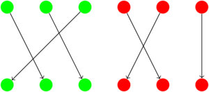
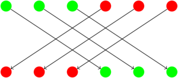

Motivating semidirect products via group actions
Table of Contents
The aim of this post is to give an alternate explanation of the semidirect product as a way to 'combine' group actions.
Introduction
Consider the actions of two groups \(G\) and \(H\) on a set \(A\). As a simple example, an $n$-gon is acted on by both the group of rotations \(C_n\) and the group \(C_2\) whose nontrivial element is a flip.
Can we combine these two actions to form another group action? Suppose it is possible; let \(G+H\) denote the 'combined' group. Then the action of \(G+H\) on \(A\) should contain both the rotations and flips. More precisely, we want the action of some element \(x \in G+H\) to be a composition of a flip and a rotation.
Deriving the semidirect product
A naive approach would be to let \(G+H\) be the direct product \(G \times H\), which acts on \(A\) by \[(g,h) \cdot a = g \cdot (h \cdot a).\]
(Note the \(\cdot\)'s in the RHS represent different operations, depending on which group the left operand is from. Despite the potential ambiguity, this notation will be used for convenience.)
The main problem with this approach however, is that this operation does not necessarily define a group action. On one hand, we have \[(g,h) \cdot ((g',h') \cdot a) = g \cdot h \cdot g' \cdot h' \cdot a\]
(from now on brackets are omitted for convenience), but \[(gg',hh') \cdot a = g \cdot g' \cdot h \cdot h' \cdot a.\]
The two expressions in the right-hand side may not be equal, since the actions of \(g'\) and \(h\) might not commute with each other. Not all hope is lost however: if we can find a unique element \(\bar{g}\) such that
\[h \cdot g' \cdot (h' \cdot a) = \bar{g} \cdot h \cdot (h' \cdot a),\]
define \((g,h)(g',h') = (g\bar{g},hh')\), and then prove that the Cartesian product \(G \times H\) forms a group under this definition, we have a well-defined group action.
Note that \(h' \cdot a\) runs through all elements of \(A\), thus \(h' \cdot a\) will be replaced with just \(a\). As before, suppose that for all \(g \in G\) and \(h \in H\), there exists a unique element \(\bar{g} \in G\) such that \(h \cdot g \cdot a = \bar{g} \cdot h \cdot a\) for all \(a \in A\) (note that \(\bar{g}\) actually depends on both \(g\) and \(h\)). In other words, the maps \(\varphi_h : G \rightarrow G\) mapping \(g \mapsto \bar{g}\) are injective.
We can already say a lot about \(\varphi_h\) itself. Firstly, it is surjective: for all \(g' \in G\) we have
\begin{align*} g' \cdot h \cdot a &= h \cdot h^{-1} \cdot g' \cdot h \cdot a \\ &= h \cdot \varphi_{h^{-1}}(g') \cdot h^{-1} \cdot h \cdot a \\ &= h \cdot \varphi_{h^{-1}}(g') \cdot a, \end{align*}so \(\varphi_h(\varphi_{h^{-1}}(g')) = g'\). Secondly, \(\varphi_h\) is an endomorphism of \(G\): since
\begin{align*} \varphi_h(g) \cdot \varphi_h(g') \cdot h \cdot a &= \varphi_h(g) \cdot h \cdot g' \cdot a \\ &= h \cdot g \cdot g' \cdot a \\ &= h \cdot gg' \cdot a \\ &= \varphi_h(gg') \cdot h \cdot a \end{align*}and \(h \cdot a\) runs through all elements of \(A\), it follows that \(\varphi_h(g)\varphi_h(g') = \varphi_h(gg')\). This combined with injectivity and surjectivity means \(\varphi_h \in \Aut(G)\).
Furthermore, the map \(\varphi : h \mapsto \varphi_h\) is an homomorphism from \(H\) to \(\Aut(G)\):
\begin{align*} \varphi_{hh'}(g) \cdot hh' \cdot a &= hh' \cdot g \cdot a \\ &= h \cdot h' \cdot g \cdot a \\ &= h \cdot \varphi_{h'}(g) \cdot h' \cdot a \\ &= \varphi_h\varphi_{h'}(g) \cdot h \cdot h' \cdot a \\ &= \varphi_h\varphi_{h'}(g) \cdot hh' \cdot a. \end{align*}As mentioned earlier, if the Cartesian product \(G \times H\) is a group under the operation \[(g,h)(g',h') = (g\varphi(h)(g'),hh'),\]
then we have a valid group action. This is precisely the definition of the semidirect product \(G \rtimes_\varphi H\)! In addition however, we have provided a useful interpretation of \(\varphi(h)\): it allows for a weaker version of commutativity to be satisfied, namely \(h \cdot g \cdot a = \varphi(h)(g) \cdot h \cdot a\). This is important because we can then define a group action which "contains" the actions of \(G\) and \(H\).
This interpretation can be used to analyze common examples of semidirect products where each element is a composition of two actions of different types, acting on the same set (for example, a rotation and a flip).
Example 1: The dihedral group \(D_{2n}\)
Let \(A\) be the set of all possible labellings of the vertices of an $n$-gon from \(1\) to \(n\). The groups \(R = \angles{r}\) and \(S = \{1,s\}\) act separately on \(A\), where \(r\) acts by rotating the figure \(2\pi/n\) radians and \(s\) acts by flipping about the $y$-axis.
The identity \(sr = r^{-1}s\) should be familiar; in the language of group actions this means \[s \cdot r \cdot a = r^{-1} \cdot s \cdot a.\]
Expressing it in this form is useful because we can immediately determine that \(\varphi(s)(r) = r^{-1}\); since \(r\) generates \(R\) this value completely determines \(\varphi(s)\). Since \(\varphi\) is a homomorphism, \(\varphi(1)\) must be the identity automorphism. The semidirect product \(C_n \rtimes C_2\) thus acts on \(A\), and each element is a composition of a reflection and a flip. Hence it is isomorphic to \(D_{2n}\).
Note that there is no semidirect product \(C_2 \rtimes C_n\) for \(n > 2\). This is because there is no \(x \in S\) such that \[r \cdot s \cdot a = x \cdot r \cdot a.\] Hence unlike a direct product, there is an asymmetry in the factors of a semidirect product.
Example 2: The group of isometries on \(\R^2\)
An isometry of \(\R^2\) can be characterised as the composition of a translation and a glide reflection (which is itself a composition of a reflection and a rotation). Translations are represented via the action of \(\R^2\) on itself by
\[ \begin{pmatrix} a \\ b \end{pmatrix} \cdot \begin{pmatrix} x \\ y \end{pmatrix} = \begin{pmatrix} a+x \\ b+y \end{pmatrix}, \]
while glide reflections are represented via the natural action of \(O(2)\) (the group of orthogonal \(2\times2\) real matrices) on \(\R^2\). Let \(t = (i, j)^t \in \R^2\) and \(M = \big(\begin{smallmatrix} a&b\\c&d \end{smallmatrix}\big) \in O(2)\). It can be seen that there is a unique translation \(t' \in \R^2\) such that \[M \cdot t \cdot a = t' \cdot M \cdot a,\] namely \(t' = (ai+bj, ci+dj)^t = Mt\). Thus the homomorphism defined by \(\varphi(M)(t) = Mt\) induces a semidirect product \(\R^2 \rtimes O(2)\), which in turn is the group of isometries on \(\R^2\).
Example 3: Wreath products
Suppose there are \(n\) groups with \(k\) elements each. We can define one type of action where elements in the same group are permuted amongst themselves:

There is another type of action where the positions of the groups themselves are shifted, but the elements of each group are fixed in their own positions:

More precisely, these are the actions of \(G = S_k \times \cdots \times S_k\) (with \(n\) factors) and \(H = S_n\) respectively on the permutations of a set. For simplicity, let \(k = 3\) and \(n = 2\). Let \(g = (\theta_1,\theta_2) \in G\), \(h\) be the nontrivial element of \(H\) and \(a = (a,b,c,d,e,f)\) be a permutation. There is a unique element \(g' \in G\) such that
\begin{align*} h \cdot g \cdot a &= (\theta_2(d),\theta_2(e),\theta_2(f),\theta_1(a),\theta_1(b),\theta_2(c)) \\ &= g' \cdot (d,e,f,a,b,c) \\ &= g' \cdot h \cdot a, \end{align*}namely \(g' = (\theta_2,\theta_1) = h(g)\). In general, the homomorphism defined by \(\varphi(h)(g) = h(g)\) induces a semidirect product \(G \rtimes H\), which is the wreath product \(S_k \wr S_n\). In other words, the wreath product \(S_k \wr S_n\) preserves grouping: the order of elements within a group and the order of groups do not matter.
Interestingly, this can be used to give an alternate characterisation of \(D_8\). \(D_8\) is precisely the group which preserves the diagonals of a square, or equivalently the pairs of diagonally opposite points. There are two such pairs, and \(D_8\) preserves the grouping of the 4 vertices into these 2 pairs. Thus \(D_8 \cong S_2 \wr S_2\).